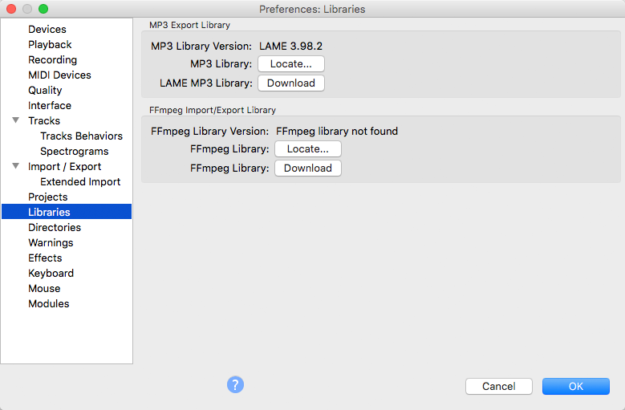

Installing and updating on Mac OS X
- In addition to basic Audacity you may wish to install the optional LAME MP3 encoding software
- Also the optional FFmpeg library which allows Audacity to import and export a much larger range of audio formats including AC3, AMR (narrow band) and WMA and also to import audio from most video files. But note that on Mac Audacity can import, without FFmpeg, M4A (AAC), MP4 (including videos) and all other QuickTime-supported files.
| Note carefully that simply re-installing Audacity will not clear and reset your Audacity settings for preferences and plug-ins. For instructions on how to achieve this please see Reset Audacity Settings. |
Installation instructions
Installation instructions using .dmg files:
- On the download page, left-click the "installer" link, the .dmg file, (do not right-click). This takes you to the FossHub site where our downloads are hosted and the download should commence.
- Double-click the downloaded DMG to mount it.
- Do not double-click the “Audacity” application in the DMG window. Instead drag Audacity rightwards onto the /Applications folder shortcut. You can also drag Audacity out of the DMG to any other location. You need the administrator password to copy Audacity to /Applications.
- Eject the DMG at bottom left of Finder, then launch Audacity.app from /Applications or from your chosen location.
If you see any error messages when launching Audacity, please see our FAQ about Mac launch.
System Requirements
Audacity for Mac is for OS X 10.6 and later. Audacity runs best with at least 1 GB RAM and a 1 GHz processor (2 GB RAM/2 GHz on OS X 10.7 and later).
For lengthy multi-track projects, we recommend a minimum of 2 GB RAM and 2 GHz processor (4 GB RAM on OS X 10.7 and later).
| The 2.1.1 release was the final release for PPC Macs. |
Projects saved by old versions of Audacity
Current Audacity is compatible with project files saved by versions of Audacity 1.3.x and later, including 2.x.x.
Check for Updates
You can check to see if you have the latest version of Audacity by using .
This takes you to the Download page of the Audacity website where you can check what the latest release version of Audacity is.
You can then compare the latest release with the version you have now as shown by using .
Plug-ins from previous Audacity installations
If you had a previous installation of Audacity 2.1.2 or earlier, its shipped plug-ins were in the "plug-ins" folder where Audacity was installed. Versions of Audacity before 2.1.3 were usually installed inside a folder named "Audacity" which was in the "Applications" folder. Because Audacity's shipped plug-ins are now bundled inside the application, any still extant Nyquist plug-ins that came with previous Audacity will appear as a second copy of the plug-in in the Generate, Effect or Analyze Menu. Duplicates of other previously shipped plug-ins might appear even if they no longer exist, in which case they will fail to run.
- You can remove any duplicates that don't run by using then click . This does not remove the duplicates from the Plug-in Manager's list, but disables them so they do not appears in the menus.
- Alternatively you can remove all unwanted duplicates, whether you have deleted the old Audacity installation folder or not, by deleting the file pluginregistry.cfg in ~/Library/Application Support/audacity/.
- If you delete the Audacity folder from a previous installation, remember to move any optional plug-ins you added to its plug-ins folder to the new Audacity Plug-Ins folder at ~/Library/Application Support/audacity/Plug-Ins.
Installing LAME on Mac
- Recommended Installer
- Go to the external download page
Left-click this link, do not right-click. - Directly underneath "For FFmpeg and LAME on Mac OSX click below:", left-click the link "Lame_Library_v3.99.5_for_Audacity_on_macOS.dmg".
- When you have finished downloading, double-click the DMG to mount it, if it has not been mounted automatically already.
- In the DMG window, or using the menu item for the mounted DMG in the Finder sidebar, double-click "Lame Library v3.99.5 for Audacity.pkg" to launch the standard Mac installer. If you receive a warning that the package cannot be opened, right-click or Ctrl-click the package, choose "Open", then click "Open".
- Click through the steps in the installer. This will remove any previous libmp3.dylib at /usr/local/lib/audacity and install the 3.99.5 libmp3lame.dylib file in the system library at /Library/Application Support/audacity/libs/.
- Audacity should detect LAME automatically when you export as MP3. If Audacity cannot find LAME:
- Click then choose "Libraries" on the left.
- Click to right of "MP3 Library:", then in the "Locate Lame" dialog that appears, click .
- The "Where is libmp3lame.dylib?" window will open at /Library/Application Support/audacity/libs/. Select the "libmp3lame.dylib" file. If the file is grayed out, change the File type: dropdown entry to All Files or Dynamic Libraries.
- Click then and .
- Alternative zip download
- Go to the external download page
Left-click this link, do not right-click. - Directly underneath "For FFmpeg/LAME on Mac OSX click below:", left-click the link "Lame_Library_v3.99.5_for_Audacity_on_macOS.zip".
- Double-click the downloaded ZIP file. On most Macs this should extract the contents of the ZIP to a new sub-folder "Lame_Library_v3.99.5_for_Audacity_on_macOS" in the folder you downloaded to. Optionally, open that new subfolder then copy the file "libmp3lame.dylib" and paste it anywhere you have full permissions (such as your Documents folder).
It is not recommended to extract the files to /usr/local/lib because administrative or root permissions may be needed to read the LAME library from there.
- Click then choose "Libraries" on the left.
- Click to right of "MP3 Library:", then in the "Locate Lame" dialog that appears, click .
- Navigate to and open the folder where "libmp3lame.dylib" is, and select the "libmp3lame.dylib" file. If the file is grayed out, change the File type: dropdown entry to All Files or Dynamic Libraries.
- Click to return to the Locate Lame dialog.
- Click in the Locate Lame dialog then to exit Preferences.
-
You should now be able to export MP3s without any further configuration, choosing then selecting "MP3 Files" in the Export Audio Dialog.
Installing the FFmpeg Import/Export Library on Mac
- Because of software patents, Audacity cannot include the FFmpeg software or distribute it from its own websites. Instead, use the following instructions to download and install the free and recommended FFmpeg third-party library.
- Advanced usage: If you already have Audacity-compatible FFmpeg 2.2.x or 2.3.x shared libraries in the system PATH, Audacity will use those as long as you do not install FFmpeg from the links below and as long as you do not specify the FFmpeg you want Audacity to use in Libraries Preferences.
|
FFmpeg 2.2.2 Mac from the links below should be used with the latest version of Audacity. The previous FFmpeg 0.6.2 for Audacity will not be recognized by Audacity 2.0.6 and later, and FFmpeg 2.2.2 will not be recognized by Audacity versions before 2.0.6.
|
- Recommended Installer:
- Go to the external download page
Left-click this link, do not right-click. - Directly underneath "For FFmpeg/LAME on Mac click below:", left-click the link "ffmpeg-mac-2.2.2.dmg" and save the file anywhere on your computer.
- When you have finished downloading, double-click the DMG file to mount it (if you download with Safari, the FFmpeg virtual disk image will be extracted and mounted automatically after downloading). If the DMG window is not on top, go to Finder, then under "Devices" on the left, click the "ffmpeg-mac-2.2.2" DMG.
- In the DMG window, double-click the "ffmpeg-mac-2.2.2.pkg" to launch the standard OS X package installer. If you receive a warning that the package cannot be opened, right-click or Ctrl-click the package, choose "Open", then click "Open".
- Click through the steps in the installer, accepting the defaults in all cases. This will install the FFmpeg libraries in /Library/Application Support/audacity/libs.
- Restart Audacity if it was running when you installed FFmpeg then Audacity should detect FFmpeg automatically.
- If you have problems with Audacity detecting FFmpeg, follow the steps to manually locate FFmpeg.
- Alternative Zip download:
- Go to the external download page
Left-click this link, do not right-click. - Directly underneath "For FFmpeg/LAME on Mac click below:", left-click the link "ffmpeg-mac-2.2.2.zip" and save the file anywhere on your computer.
- Some Mac computers may extract the files from the zip automatically to a new folder in the download directory. Otherwise, extract the entire contents of the downloaded ZIP file to a folder called "ffmpeg-mac-2.2.2" anywhere you have full permissions (such as your Desktop). Then follow the instructions below to locate libavformat.55.dylib using the Libraries Preferences.
It is not recommended to extract the files to /usr/local/lib because administrative or root permissions may be needed to read the FFmpeg library from there.
- Compiling Audacity against another build of FFmpeg:
- You can also build and install your own copy of FFmpeg 1.2 or later using source code from the FFmpeg project. Then build Audacity from Git sources according to mac/Build.txt, linking to your self-installed copy of FFmpeg according to these principles.
Locating the FFmpeg library manually
If you installed FFmpeg while Audacity was running, or if you installed FFmpeg to a non-default location, Audacity will ask you to configure Preferences to locate the FFmpeg library. To do this, access Preferences then the "Libraries" tab on the left:
- 
As in the image above, the "FFmpeg Library Version" will say "not found". To correct this:
- Click the button to right of FFmpeg Library:.
- If a "Success" message indicates Audacity has now automatically detected valid FFmpeg libraries and asks if you want to detect them manually, click , then to close Preferences.
- If the "Locate FFmpeg" dialog appears, click .
- Navigate to the folder that contains FFmpeg and select the file "libavformat.55.dylib".
- Click then and again to close Preferences.
FFmpeg Library Version should now show a set of three version numbers for the sub-libraries of FFmpeg ("F" for libavformat version, "C" for libavcodec version and "U" for libavutil version). If you still see "not found", you may have installed the wrong libraries. Click the button to obtain the correct library for your operating system. You can also choose to see diagnostic information about FFmpeg detection.
Reset Audacity Settings on Mac
As stated in the introduction on this page, simply re-installing Audacity will not clear and reset your Audacity settings for preferences and plug-ins.
The data for these are stored in a folder called audacity in the Library>Application Support in your user directory.
On macOS the full pathname is: your username > Library > Application Support > audacity
To open the audacity settings folder:
- Open Finder and click on Go > Go to Folder...
- In the dialog box type ~/Library/Application Support/audacity
- click the button
- In the sidebar of a Finder window, click on your username (it will have a house icon beside it)
- Click on the View menu and select Show View Options
- check "on" "Show Library Folder"
- The Library folder will then show in your username folder
First you will need to quit Audacity.
To completely reset your Audacity settings
Navigate to that audacity folder with Finder and delete the entire contents. Then restart Audacity.
| If you have added additional plug-ins to the Plug-Ins folder and wish to keep them, do not delete that folder. |
To reset just your Audacity preferences
Navigate to that audacity folder with Finder and delete the audacity.cfg file. Then restart Audacity.
To reset just your plug-ins
Navigate to that audacity folder with Finder and delete the:
- pluginregistry.cfg file
- pluginsettings.cfg file
- Plug-Ins folder
Then restart Audacity
| If you want to reset your plug-in settings but do not want to lose any additional plug-ins you have added to the Plug-Ins folder, do not delete that folder. |